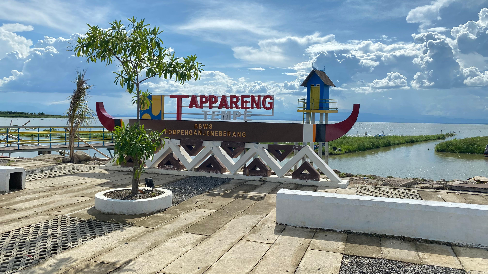
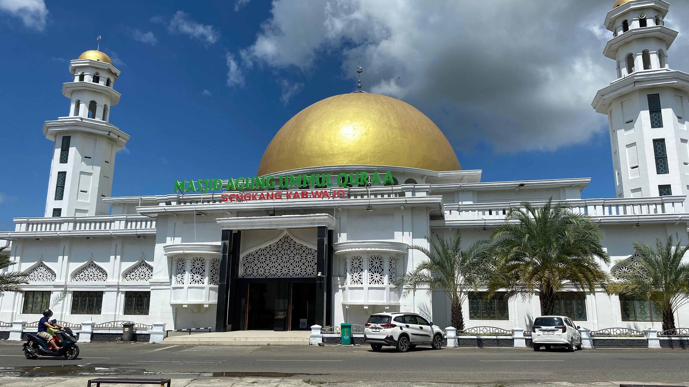
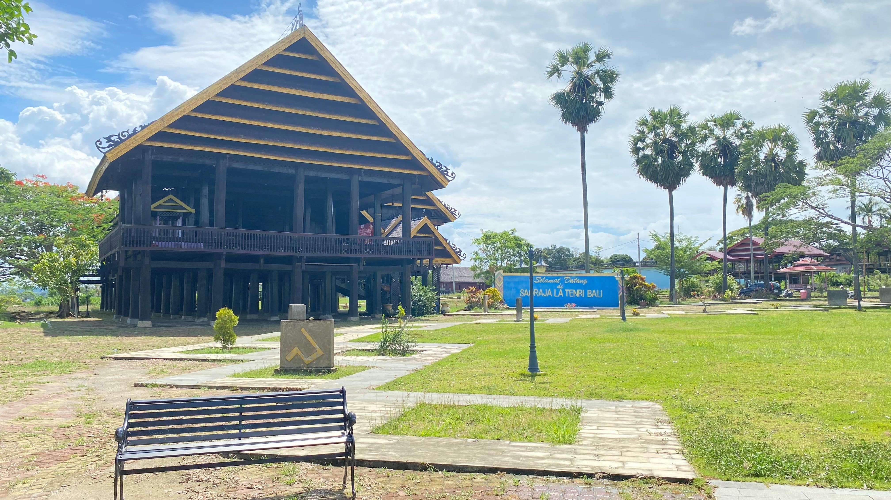
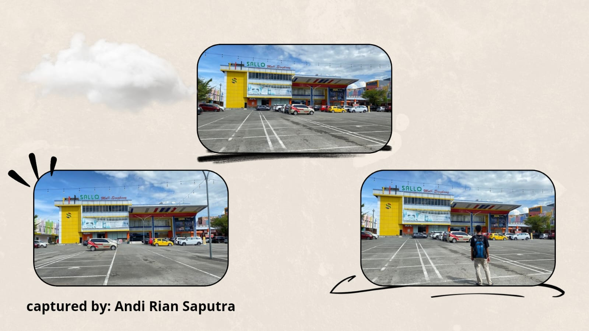
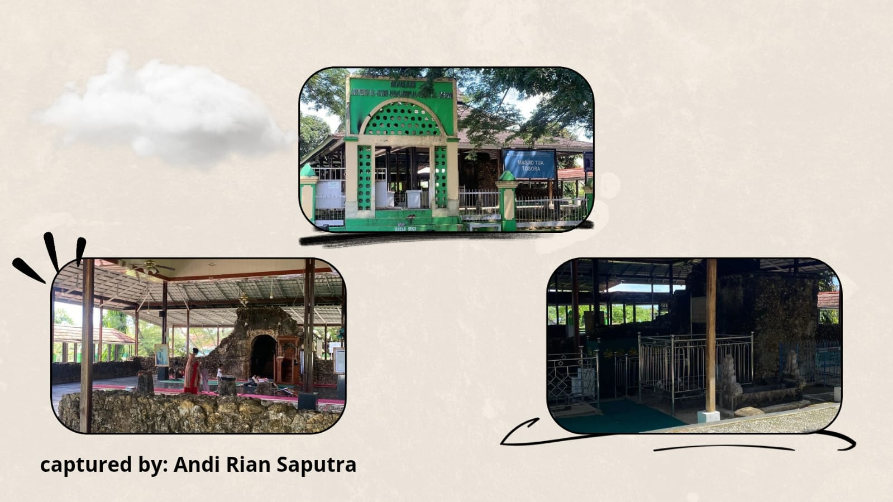
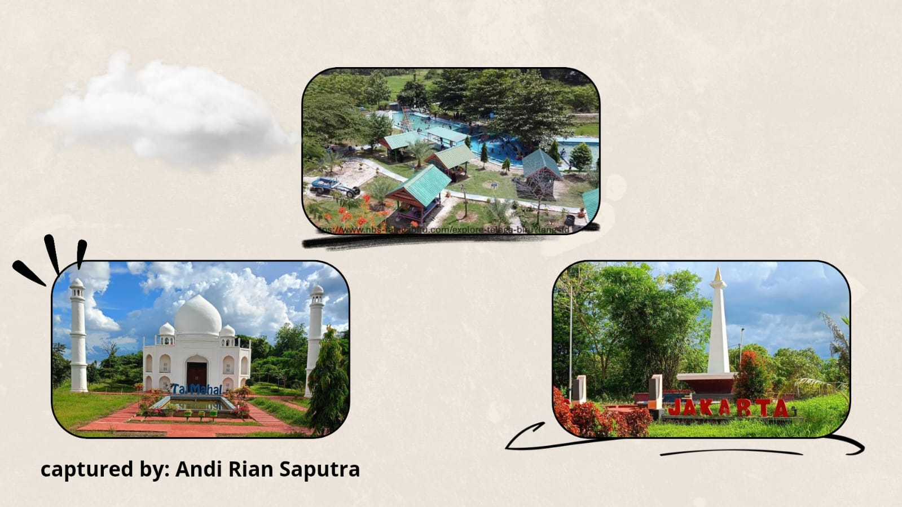
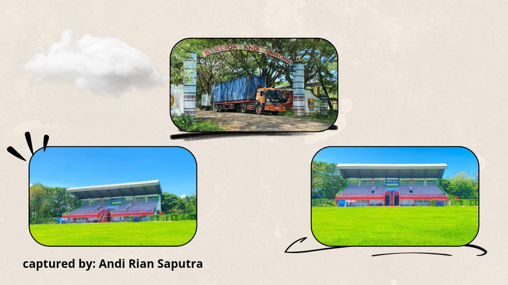
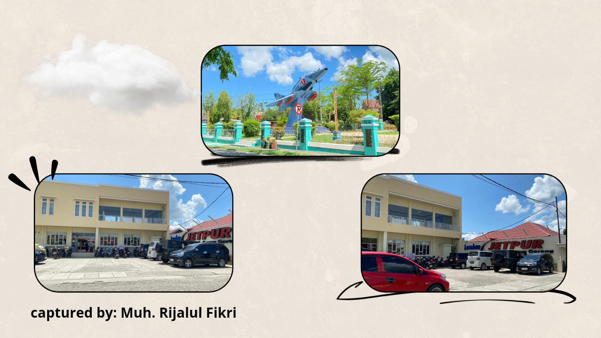
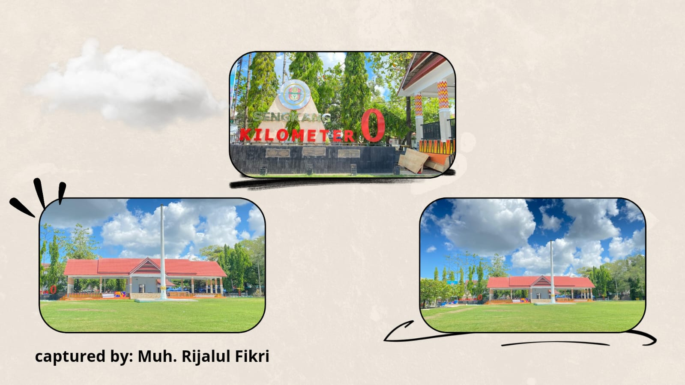

Selamat Datang di WajoExplore
Temukan informasi terlengkap tentang sejarah, tempat wisata, kuliner, dan budaya di Kab. Wajo.
Jelajahi SekarangDestinasi Unggulan:

Danau Tempe
Danau purba di Sulawesi Selatan yang terletak di tiga kabupaten (Wajo, Soppeng, dan Sidrap), dikenal sebagai danau terbesar kedua di Sulawesi.

Masjid Agung Ummul Quraa
Masjid kebanggaan warga Wajo yang dulunya dikenal sebagai Masjid Raya Sengkang, kini bernama Ummul Quraa.







Rumah Adat Atakkae
Kawasan wisata budaya yang menampilkan rumah adat dari berbagai kecamatan di Kabupaten Wajo.